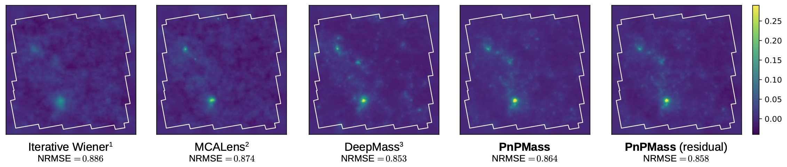
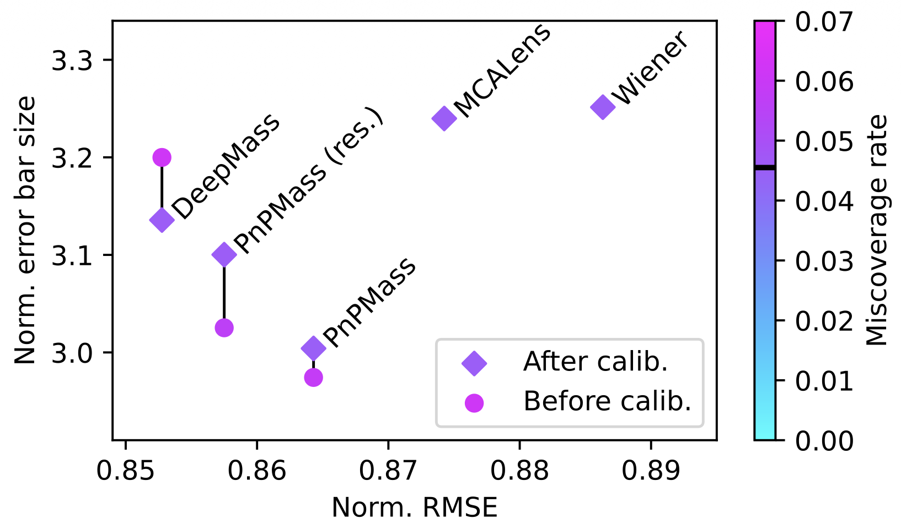
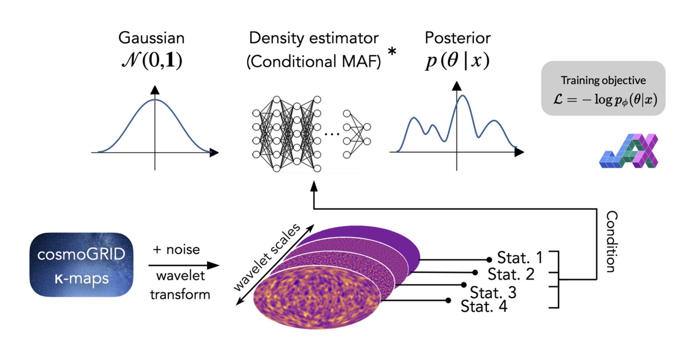

PhD Results Overview
Mass Mapping, Higher-Order Statistics, and Cosmological Inference
European Grant Evaluation Committee
Andreas Tersenov | March 2026
Why this work matters
- Goal: constrain cosmological models using weak gravitational lensing observations.
- Challenge: the signal is noisy and indirect; it is hard to extract robust information and translate it into constraints on cosmology.
- Context: this work is directly connected to major survey programs, including Euclid and UNIONS, where I contribute as a team member.
- My PhD focus:
- More reliable mass reconstruction (mass mapping)
- More informative measurements (Higher-Order Statistics)
- More robust parameter estimation (cosmological inference)
7-minute roadmap: 3 projects, 3 key results.
Project 1: Does reconstruction method change the science?
Question: if we change the mass-mapping algorithm, do cosmological constraints change?
What I tested: same data, same inference pipeline, different mapping methods.
Main result: yes, method choice matters significantly for final constraints.
- Advanced mapping (MCALens) improved the Figure of Merit by about 157% vs standard KS.
- Gain comes mostly from better recovery of small-scale, non-Gaussian information.
Project 2: PnPMass (fast, flexible reconstruction)
Problem: classical methods can be slow, rigid, or hard to calibrate.
My contribution: a Plug-and-Play method (PnPMass):
- Uses physics-based data consistency step
- Uses deep denoiser as learned prior
- Works with different noise conditions without retraining core solver
Outcome: improved map quality and practical usability.


Project 2 (continued): Fast uncertainty maps
- Beyond one best map, we also need confidence in each pixel.
- I trained an auxiliary network to estimate uncertainty, then calibrated it with conformal methods.
- Result: uncertainty intervals are both fast and statistically reliable.


Project 3: Baryonic feedback and robust inference (SBI)
Problem: astrophysical baryonic effects can mimic cosmology and bias results.
Approach: Simulation-Based Inference (SBI) with neural density estimation.
- Compared standard 2-point statistic and higher-order statistics.
- Quantified bias as surveys become larger and more precise.
- Designed mitigation via targeted scale cuts.

Project 3: Key takeaways
- Baryonic bias increases with survey area; at Stage IV precision it is non-negligible.
- After safe scale cuts, higher-order statistics remain highly competitive.
- Starlet-based summary statistics can still outperform standard power spectrum constraints on safe scales.
Training and Career Impact
- Secondments: every year, 3-month research stays at CEA Saclay with direct collaboration on methods and analysis.
- Dissemination: conference participation and invited presentations to share project results with the community.
- Career development: advanced training in data analysis, scientific software, international collaboration, and project communication.
- Outcome: secured a 3-year postdoctoral fellowship at the University of Virginia.
The project delivered both scientific results and strong professional development.
Overall PhD impact
- Methodological: demonstrated that mass-mapping choice directly impacts inferred cosmology.
- Algorithmic: developed PnPMass for accurate reconstruction with fast, calibrated uncertainty.
- Inference robustness: quantified baryonic systematics and validated practical mitigation in SBI.
Main message: more reliable maps + richer statistics + robust inference = stronger cosmological conclusions.
For Stage IV surveys (Euclid, Rubin, Roman), this means analyses can use more of the available information while keeping systematic bias under control.
In practice, these methods help turn higher statistical precision into trustworthy cosmological constraints.
Thank you
Questions welcome
Backup details available if needed